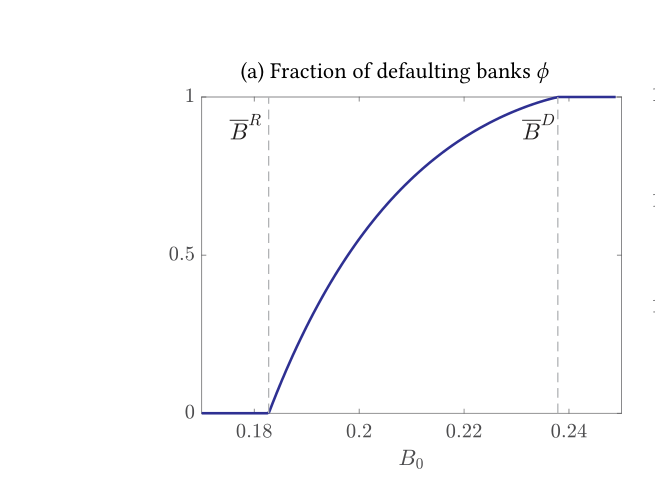
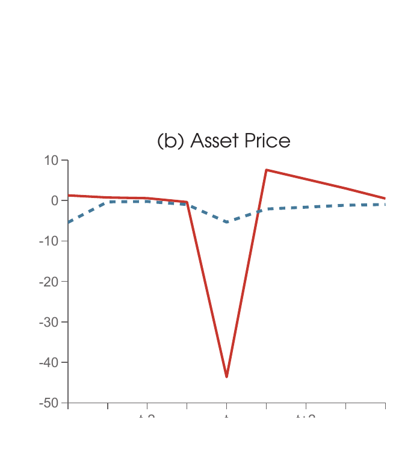

Browse by topic:
Financial Crises and Macroprudential Policy ·
International Reserves ·
Banking ·
Monetary Policy ·
Sovereign Debt ·
Geoeconomics ·
Heterogeneous Agents
Working Papers BibTeX — all entries


Press and Policy Coverage: Financial Times | Reuters | Central Banking | Speech by Governor Christopher J. Waller


Revise and Resubmit, Quarterly Journal of Economics

Revise and Resubmit, Review of Economic Studies

Revise and Resubmit, Journal of Political Economy

Revise and Resubmit, American Economic Journal: Macroeconomics




Policy Coverage: ECB | Bank of England
Work in Progress
One Money, Many Debts: Monetary Credibility and Self-Fulfilling Sovereign Risk in a Monetary Union
Macroprudential Policy According to HANK
Publications BibTeX — all entries

Quarterly Journal of Economics, August 2026

Review of Economic Studies, July 2026

Journal of Economic Theory, May 2026


Journal of Economic Theory, June 2025

American Economic Review, July 2024

Journal of Monetary Economics, October 2023

Review of Economic Studies, July 2023

AEA Papers and Proceedings, May 2023

Journal of Political Economy, September 2023
Policy Coverage: IMF Fiscal Monitor

Journal of International Economics, November 2022

Handbook of International Economics, Vol. V, 2022


Quarterly Journal of Economics, February 2022

Review of Economic Dynamics, August 2020

Review of Economic Studies (Featured Article), July 2020


American Economic Review, September 2018
Policy Coverage: Bank of Canada

Journal of Political Economy, April 2018


Journal of Economic Dynamics and Control, November 2016

Journal of International Economics, March 2016

IMF Economic Review, June 2012

American Economic Review, 2011

American Economic Review, Papers and Proceedings, 2010